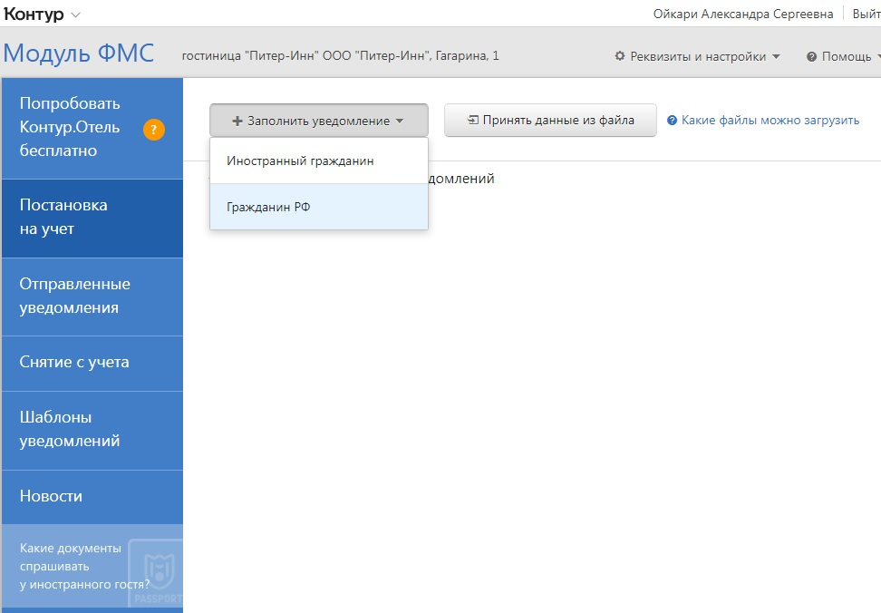
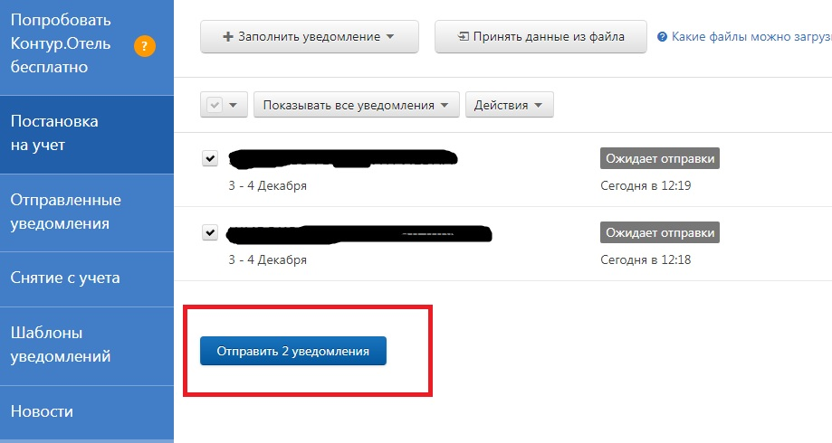
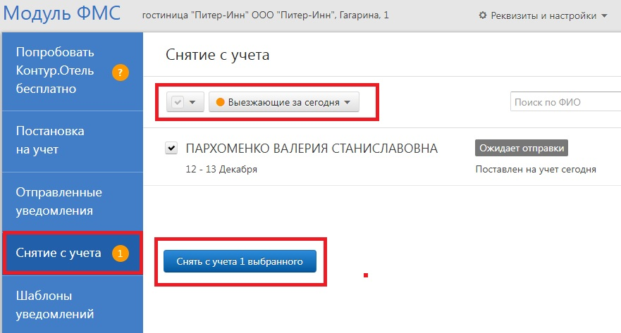
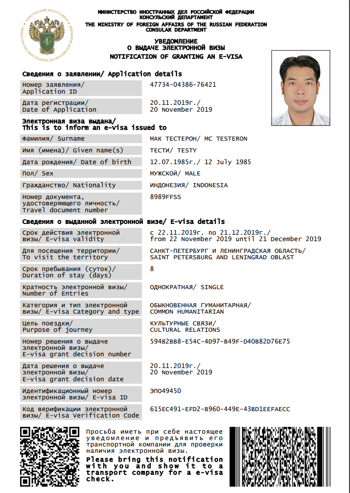
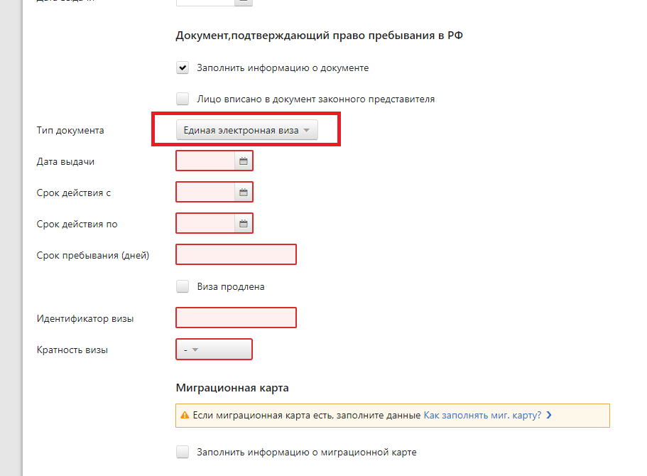
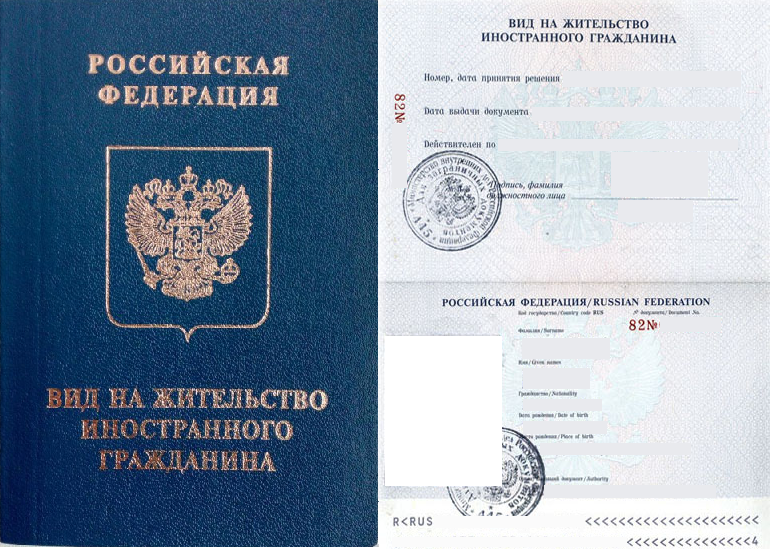
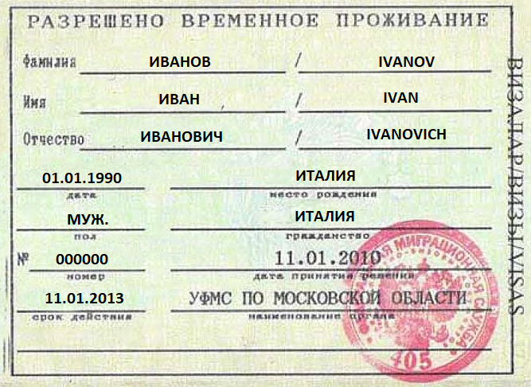
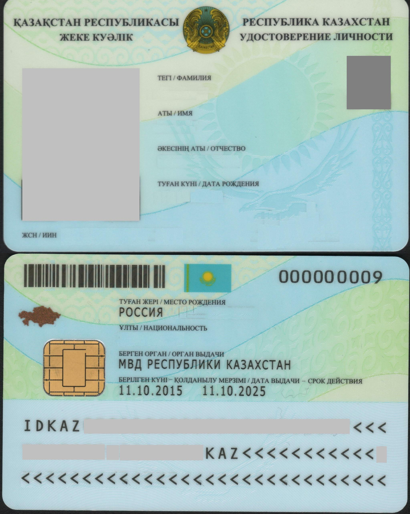
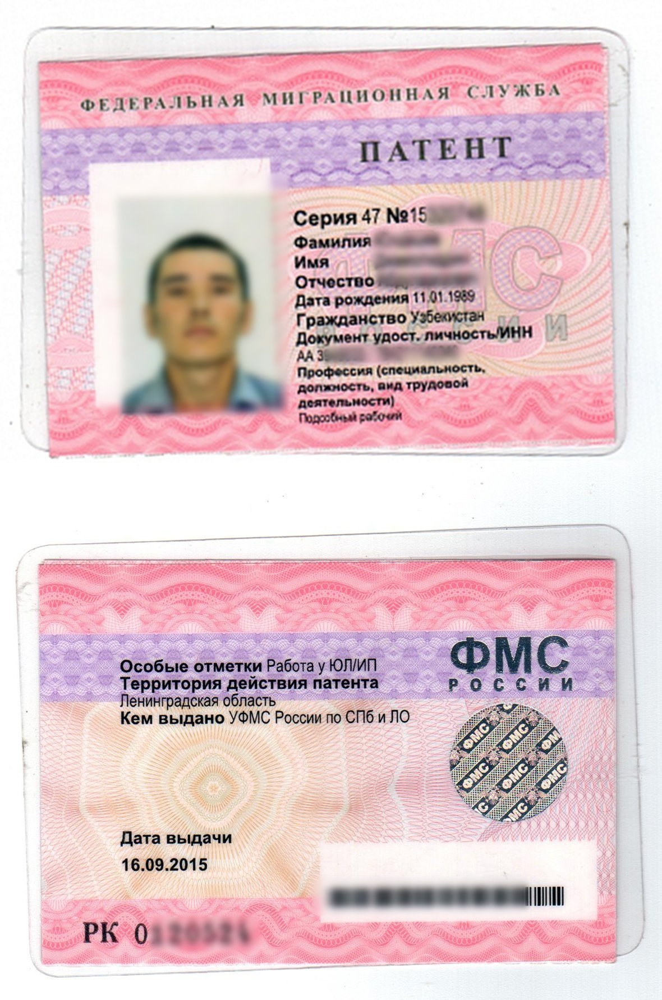
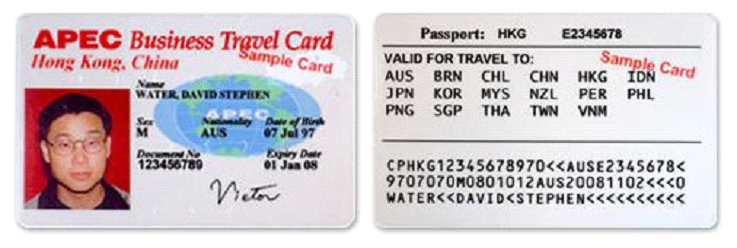

Обязательная регистрация всех гостей осуществляется в Системе "Контур".
Гостей, имеющих прописку в Республике Карелия, которые будут проживать менее 90 дней, регистрировать не нужно (но необходимо заполнить профиль в Опере).
Обязательная регистрация всех гостей осуществляется в Системе "Контур".
Гостей, имеющих прописку в Республике Карелия, которые будут проживать менее 90 дней, регистрировать не нужно (но необходимо заполнить профиль в Опере).
Постановка на учет → +Заполнить уведомления → Гражданин РФ
Заполняем графы: ФИО, Дата рождения, Пол, в месте рождения указываем город и страну рождения, если пос./дер./село и др. то указываем еще и регион. Обязательно заполняем все как в паспорте.
Адрес регистрации заполняем по прописке, если отсутствует - выбрать чекбокс “Отсутствует”.
Выбираем “Тип Документа”, серия и номер паспорта, кем выдан код подразделения, дата выдачи.
Дата въезда и дата выезда из гостиницы.
Либо нажимаем распознать паспорт РФ, загрузить файл, выбираем паспорт гостя с первой и второй страницей, проверяем, удаляем прикрепленное фото, заполняем адрес регистрации по прописке.
Считыватель документов - подключить - отсканировать первую страницу с фото, потом вторую, потом прописку - далее выбрать bat. файл pass_fo1, чтобы 1 и 2 страницу совместить в одну, они сохранятся в Z:\FrontOffice\Passports\scan\FO1
Если скан был сделан неудачно и страницы скрепить не удалось, можно посмотреть все сделанные сканы в C:\RD
Если заполняем гражданина не достигшего 14 лет, то в графе тип док-та выбираем св-во о рождении. В графе Сведения о законном представителе нажимаем Указать законного представителя и выбираем зарегистрированного родителя или опекуна.
После заполнения данных гостей нажать сохранить.
Далее необходимо отправить уведомление нажав на соответствующую кнопку.
После 00:00 необходимо снять с учета, выбрав в меню слева Снятие с учета.

Основные документы у иностранцев: Паспорт, Виза, Миграционная карта
У гостей из Белоруси только паспорт.
У гостей из Казахстана паспорт (id карта) + миграционная карта.
Выглядит следующим образом:
ЕЭВ заполняется следующим образом:

Е-виза действительна 60 дней с момента ее оформления, но иностранный гражданин сможет находится в России до 16 суток. Если он приехал в РФ на 55 сутки с момента оформления визы, то может законно находиться в РФ только 5 дней, то есть до конца срока действия визы.
Это отдельный лист формата А4 (если цель поездки туристическая, частная, гуманитарная, коммерческая)
Проверить действительность е-визы можно на сайте МИД РФ.
При постановки на учет в Контуре по электронной визе пока поле про визу не заполняете (оставьте пустым), но ОБЯЗАТЕЛЬНО нужно прикладывать скан этой визы.
ВАЖНО: у гостя обязательно должна быть миграционная карта, т.к. срок пребывания на территории РФ ограничен 16 днями по эл визе. И именно из миграционной карты мы узнаем, когда гость пересек границу.Гостей БЕЗ МИГРАЦИОННОЙ КАРТЫ ПО ЭЛЕКТРОННОЙ ВИЗЕ заселять НЕЛЬЗЯ!
Если в поле “Номер визы/Visa number” не указан номер визы, значит ее нет и для заселения она не требуется. Если же номер указан, значит ищем в паспорте необходимую Визу.
ВНЖ может быть оформлен только в виде отдельного документа (книжки).
Вид на жительство заменяет визу.
РВП оформляется в виде отметки в документе, удостоверяющем личность, либо отдельным документом установленной формы.
Как правило, РВП выдается на три года и не продлевается. После окончания срока действия документа иностранец должен выехать из страны или получить вид на жительство.
В некоторых случаях РВП заменяет визу.
Паспорта дипломатов в контур не заполняются. Можно сделать копию, отдать охране.
Удостоверение личности гражданина Республики Казахстан — выдается гражданам с 16-летнего возраста. Заполняется как иностранный паспорт. Помимо данного удостоверения может быть миграционная карта.
Патент может быть выдан на срок от 1 до 12 месяцев. В самом патенте указывается только дата выдачи, а срок его действия определяется суммой уплаченного НДФЛ в виде фиксированного авансового платежа. Эту оплату подтверждают квитанции. Первая квитанция должна быть оплачена до получения патента, в противном случае патент не действителен.
Патент можно продлить, внеся новую оплату на следующий период. Новые квитанции должны быть оплачены до окончания предыдущего оплаченного периода. Суммарно с учетом продлений срок действия патента не может превышать 12 месяцев с даты выдачи.
Например: патент выдан 01.03.2020. Изначально иностранец оплатил квитанцию на месяц, таким образом, срок действия патента истекает 31.03.2020. До этой даты он может оплатить следующую квитанцию и продлить патент еще, например, на полгода.
По окончанию срока действия патента он может быть переоформлен — иностранец получит новый патент с новой датой выдачи. Срок действия переоформленного патента и правила его продления аналогичны обычному патенту.
Соответственно, для заселения требуется патент и все чеки/квитанции об оплате.
Карта APEC действует как визовый документ (вместо визы) в течение пяти лет с даты выдачи.
